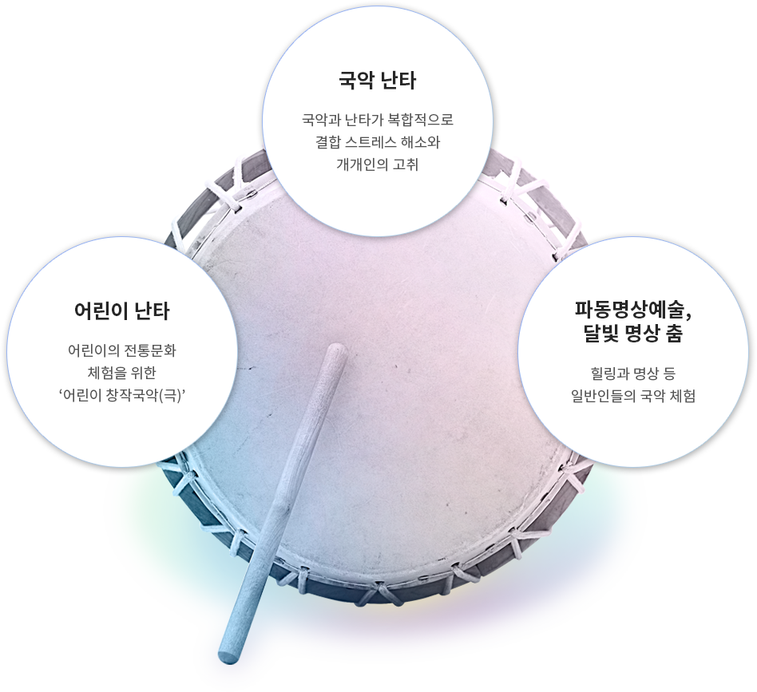

<? include "../inc/header.html"; ?>

<!-- 서브 비주얼 -->
<section class="subVisual subVisual01">
  <h2>센터 운영</h2>
</section>
<!-- 서브 비주얼 끝-->
<? include "../inc/sub_select.html"; ?>
<script>
  let thisPage = "#sub03";
</script>

<main class="subContents">
  <div class="sub_center">
    <h3 class="pageTitle">프로그램 소개</h3>
    <ul class="subTabs">
      <li><a href="sub03.html">전문가 양성과정</a></li>
      <li class="on"><a href="sub03_2.html">문화양성과정</a></li>
    </ul>

    <dl class="programDl">
      <dt>일반인 &amp; 문화예술 향유자를 위한 문화연수과정</dt>
      <dd>일반인, 문화 예술 향유자 등을 대상으로 한 문화연수과정은 기업과의 연계를 통한 기업연수
        또는 단기 클래스를 열어 여성국극을 보다 쉽고 재밌게 접할 수 있는 실기수업 위주로 진행합니다.</dd>
    </dl>

    <div class="studyStep">
      
    </div>

  </div>
</main>

<? include "../inc/footer.html"; ?>
<script src="../js/sub.js"></script>